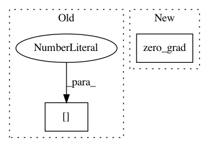

0cc8f2be01456c1e91f160e7fd8f1d830e3332ae,train.py,,main,#Any#,30
Before Change
mean_precision = 0
// Recall
recall = metrics[0] / (metrics[0] + metrics[2] + 1e-16)
k = (metrics[0] + metrics[2]) > 0
if k.sum() > 0:
mean_recall = recall[k].mean()
After Change
// accumulated_batches = 4 // accumulate gradient for 4 batches before stepping optimizer
// if ((i+1) % accumulated_batches == 0) or (i == len(dataloader) - 1):
optimizer.step()
optimizer.zero_grad()
// Compute running epoch-means of tracked metrics
ui += 1
metrics += model.losses["metrics"]
In pattern: SUPERPATTERN
Frequency: 3
Non-data size: 2
Instances
Project Name: ultralytics/yolov3
Commit Name: 0cc8f2be01456c1e91f160e7fd8f1d830e3332ae
Time: 2018-10-09
Author: glenn.jocher@ultralytics.com
File Name: train.py
Class Name:
Method Name: main
Project Name: HyperGAN/HyperGAN
Commit Name: 174ff6fbaaef8678313f8722690c5db4bbe58ae9
Time: 2020-02-07
Author: martyn@255bits.com
File Name: hypergan/trainers/simultaneous_trainer.py
Class Name: SimultaneousTrainer
Method Name: _step
Project Name: sony/nnabla
Commit Name: 699ce9a0d6e19852f5d6171f86265b718bc860f8
Time: 2021-03-01
Author: woody.li@sony.com
File Name: python/src/nnabla/utils/cli/train.py
Class Name:
Method Name: _update